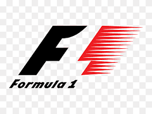

Historia
El Campeonato Mundial de Fórmula 1 de la FIA, más conocida como Fórmula Uno, Fórmula 1 o F1, es la máxima competición de automovilismo internacional y campeonato de deportes de motor más popular y prestigioso del mundo. La entidad que la dirige es la Federación Internacional del Automóvil (FIA). Desde septiembre del 2016, la empresa estadounidense Liberty Media, a través de la adquisición del Formula One Group, es responsable actualmente de gestionar y operar el campeonato. Logos usados desde 1987 hasta 1993, y de 1993 hasta 2017. A cada carrera se le denomina Gran Premio y el torneo que las agrupa se denomina Campeonato Mundial de Fórmula 1. La mayoría de los circuitos de carreras donde se celebran los Grandes Premios son autódromos, aunque también se utilizan circuitos callejeros y anteriormente se utilizaron circuitos ruteros. A su vez, los automóviles utilizados son monoplazas con la última tecnología disponible.
De 1927 a 1934, el número de carreras consideradas Gran Premio creció hasta alcanzar dieciocho en 1934, el máximo antes de la Segunda Guerra Mundial.Las carreras de Gran Premio tienen sus raíces en las carreras automovilísticas surgidas en Francia en 1894. En un principio se trataba de eventos individuales, sin conexión y en caminos de tierra, prácticamente sin ninguna limitación. De 1927 a 1934, el número de carreras consideradas Gran Premio creció hasta alcanzar dieciocho en 1934, el máximo antes de la Segunda Guerra Mundial.
